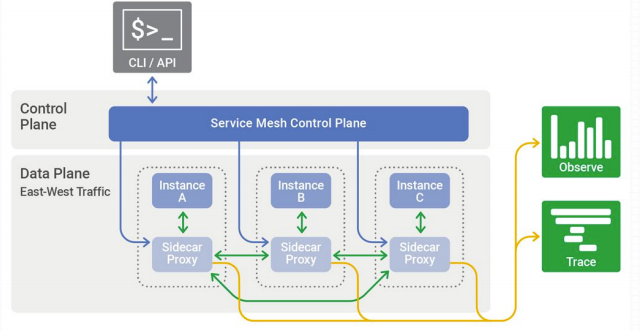
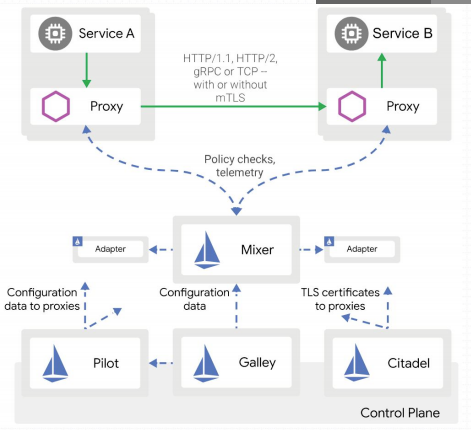
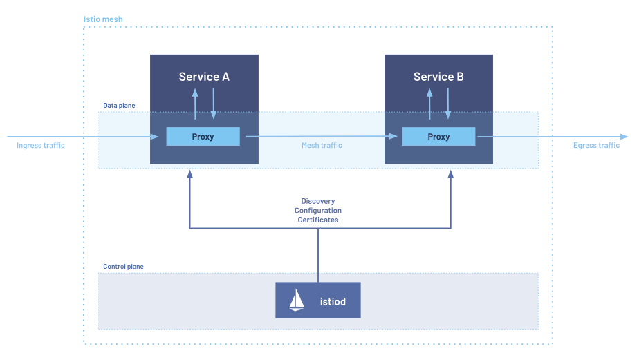
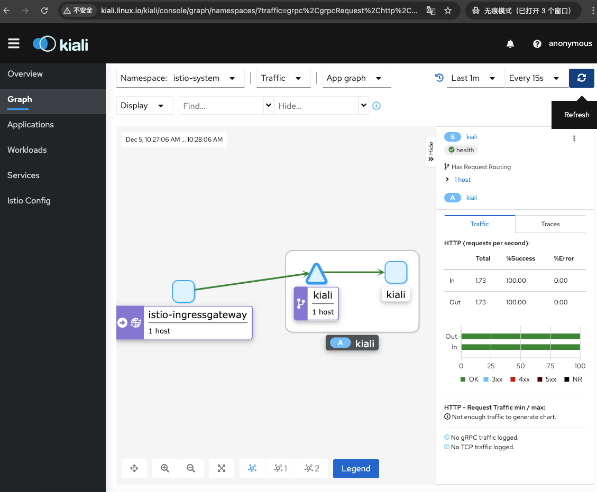

Istio 架构概述¶
Istio是一个开源的独立服务网格，是Envoy Data Plane的控制平面实现，可为用户成功运行分布式微服务架构提供所需的基础设施。Istio 服务网格逻辑上分为数据平面和控制平面。
- 数据平面：服务网格应用程序中管理实例之间的网络流量的部分，以Sidecar的形式与服务进程运行在一起
- 控制平面：生成和部署控制数据平面行为的相关配置，主要由Pilot、Mixer、Citadel 和Galley四个组件组成
- API接口
- 命令行界面
- 用于管理应用程序的图形用户界面

Istio 系统架构¶

| 组件 | 程序文件 | 功能 | |
|---|---|---|---|
| 控制平面 | Pilot | istio-pilot | 管理和配置部署在Istio服务网格中的所有Envoy代理实例 |
| Mixer | istio-telemetry istio-policy |
负责收集遥测数据 负责执行访问策略和管理配额 |
|
| Citadel | 负责服务的私钥和数字证书管理，用于提供自动生成、分发、轮换及撤销私钥和数据证书的功能 | ||
| Citadel | 负责服务的私钥和数字证书管理，用于提供自动生成、分发、轮换及撤销私钥和数据证书的功能 | ||
| Galley | 负责向Istio控制平面的其它组件提供支撑功能，它核验进入网格的配置信息的格式和内容的正确性，并将这些配置信息提供给Pilot和Mixer |
这是老版本微架构，新版本 使用 istiod 单体程序实现上述功能

- Ingress Gateways: 反向代理，用于将Istio功能（例如，监控和路由规则）应用于进入服务网格的流量
- Engress Gateways：正向代理，代理应用流量访问网格内其他应用
- Istiod：提供服务发现、配置和证书管理
Istio的所有路由规则和控制策略都基于Kubernetes CRD实现，于是，其各种配置策略的定义也都保存于kube-apiserver后端的存储etcd中； - kube-apiserver也就是Istio的APIServer - Galley负责从kube-apiserver加载配置并进行分发
Istio提供了大量的CRD，它们大体可分为如下几类:
| 类型 | 实现组件 | 资源 | 功能 |
|---|---|---|---|
| Network | Pilot | VirtualService DestinationRule Gateway ServiceEntry EnvoyFilte |
实现流量治理 |
| Authentication | Citadel | Policy MeshPolicy |
实现策略认证 |
| Config | Mixer | httpapispecbindings.config.istio.io httpapispecs.config.istio.io |
实现Mixer的各种配置需求 |
快速部署Istio¶
前提：准备好kubernetes集群
- kubertes: v1.23.5
-
istio: v1.12.1
-
下载istioctl及相关的安装文件和示例文件
~# wget https://github.com/istio/istio/releases/download/1.12.1/istio-1.12.1-linux-amd64.tar.gz
~# tar -xf istio-1.12.1-linux-amd64.tar.gz -C /usr/local/
~# ln -sv /usr/local/istio-1.12.1/ /usr/local/istio
~# cp /usr/local/istio/bin/istioctl /usr/bin/
~# istioctl version
no running Istio pods in "istio-system"
1.12.1
| 内置配置档案 | 说明 | 推荐使用 | istio-egressgateway | istio-ingressgateway | istiod |
|---|---|---|---|---|---|
| default | 根据IstioOperator API的默认设置启用相关的组件，适用于生产环境 | ✅ | ✅ | ✅ | |
| demo | 会部署较多的组件，旨在演示istio的功能，适用于运行BookInfo一类的应用程序 | ✅ | ✅ | ✅ | ✅ |
| minimal | 类似于default profile，但仅部署控制平台组件 | ✅ | |||
| remote | 用于配置共享Control Plance的多集群环境 | ||||
| empty | 不部署任何组件，同在帮助用户在自定义profile是生成基础的配置信息 | ||||
| preview | 包含预览性配置的profile，用于探索istio新功能，但不保证稳定性、安全性和性能 | ❗️ | ✅ | ✅ |
- 查看内建 profile
~# istioctl profile list
Istio configuration profiles:
default
demo
empty
external
minimal
openshift
preview
remote
- 查看某profile详细信息
~# istioctl profile dump demo
- 安装istio控制平面
~# istioctl install --set profile=demo -y
✔ Istio core installed
✔ Istiod installed
✔ Egress gateways installed
✔ Ingress gateways installed
✔ Installation complete Making this installation the default for injection and validation.
Thank you for installing Istio 1.12. Please take a few minutes to tell us about your install/upgrade experience! https://forms.gle/FegQbc9UvePd4Z9z7
~# kubectl get pod -n istio-system -o wide
NAME READY STATUS RESTARTS AGE IP NODE NOMINATED NODE READINESS GATES
istio-egressgateway-65bdddf685-6fk64 1/1 Running 0 117s 10.244.3.15 k8s-worker03 <none> <none>
istio-ingressgateway-7b545cdbc7-cmpx4 1/1 Running 0 117s 10.244.1.14 k8s-worker01 <none> <none>
istiod-864977fd6c-lf7hr 1/1 Running 0 2m59s 10.244.3.14 k8s-worker03 <none> <none>```
- 部署addons
~# cd /usr/local/istio/
/usr/local/istio# kubectl apply -f samples/addons/
/usr/local/istio# kubectl get pod -n istio-system -w
NAME READY STATUS RESTARTS AGE
grafana-5fb899f96-7q7cq 1/1 Running 0 4m5s
istio-egressgateway-65bdddf685-6fk64 1/1 Running 0 12m
istio-ingressgateway-7b545cdbc7-cmpx4 1/1 Running 0 12m
istiod-864977fd6c-lf7hr 1/1 Running 0 13m
jaeger-d7849fb76-5xql5 1/1 Running 0 4m5s
kiali-c9d6f75d5-p6tm5 1/1 Running 0 4m5s
prometheus-d7df8c957-r95fw 2/2 Running 0 4m4s
- 标记名称空间自动注入sidercar
~# kubectl label namespace default istio-injection=enabled
~# kubectl create deployment demoapp --image=ikubernetes/demoapp:v1.0 --replicas=3
deployment.apps/demoapp created
~# kubectl get pod -owide
NAME READY STATUS RESTARTS AGE IP NODE NOMINATED NODE READINESS GATES
demoapp-5748b7ccfc-g96k7 2/2 Running 0 2m49s 10.244.1.18 k8s-worker01 <none> <none>
demoapp-5748b7ccfc-kzjg6 2/2 Running 0 2m49s 10.244.2.17 k8s-worker02 <none> <none>
demoapp-5748b7ccfc-s947x 2/2 Running 0 2m49s 10.244.3.20 k8s-worker03 <none> <none>
~# kubectl exec -it demoapp-5748b7ccfc-s947x -- curl localhost:15000/listeners
750a3fbc-694b-4573-a86b-5a7d2e5b5075::0.0.0.0:15090
914ef458-da0d-49c4-8b30-11e7de70fd11::0.0.0.0:15021
10.101.188.140_443::10.101.188.140:443
10.106.26.93_443::10.106.26.93:443
10.106.26.93_31400::10.106.26.93:31400
10.96.0.1_443::10.96.0.1:443
10.96.0.10_53::10.96.0.10:53
10.101.188.140_15012::10.101.188.140:15012
10.100.191.210_443::10.100.191.210:443
10.106.26.93_15443::10.106.26.93:15443
0.0.0.0_15014::0.0.0.0:15014
10.100.9.63_14250::10.100.9.63:14250
10.99.69.60_3000::10.99.69.60:3000
10.100.9.63_14268::10.100.9.63:14268
0.0.0.0_20001::0.0.0.0:20001
10.98.71.107_80::10.98.71.107:80
0.0.0.0_15010::0.0.0.0:15010
10.106.26.93_15021::10.106.26.93:15021
0.0.0.0_80::0.0.0.0:80
0.0.0.0_9411::0.0.0.0:9411
0.0.0.0_9090::0.0.0.0:9090
10.96.0.10_9153::10.96.0.10:9153
0.0.0.0_16685::0.0.0.0:16685
virtualOutbound::0.0.0.0:15001
virtualInbound::0.0.0.0:15006
~# kubectl exec -it demoapp-5748b7ccfc-s947x -- curl localhost:15000/clusters
- 卸载Istio
kubectl delete -f samples/addons
istioctl x uninstall -y --purge
kubectl label namespace default istio-injection-
kubectl delete namespace istio-system
Istioctl 命令¶
- 查看配置下发的状态
istioctl proxy-status [<type>/]<name>[.<namespace>] [flags]
~# istioctl proxy-status
NAME CDS LDS EDS RDS ISTIOD VERSION
demoapp-5748b7ccfc-g96k7.default SYNCED SYNCED SYNCED SYNCED istiod-864977fd6c-lf7hr 1.12.1
demoapp-5748b7ccfc-kzjg6.default SYNCED SYNCED SYNCED SYNCED istiod-864977fd6c-lf7hr 1.12.1
demoapp-5748b7ccfc-s947x.default SYNCED SYNCED SYNCED SYNCED istiod-864977fd6c-lf7hr 1.12.1
istio-egressgateway-65bdddf685-6fk64.istio-system SYNCED SYNCED SYNCED NOT SENT istiod-864977fd6c-lf7hr 1.12.1
istio-ingressgateway-7b545cdbc7-cmpx4.istio-system SYNCED SYNCED SYNCED NOT SENT istiod-864977fd6c-lf7hr 1.12.1
root@k8s-master01:~#
- 查看配置信息
istioctl proxy-config <clusters|listeners|routes|endpoints|bootstrap|log|secret> <pod-name[.namespace]>
~# istioctl proxy-config clusters demoapp-5748b7ccfc-g96k7.default --port 80
SERVICE FQDN PORT SUBSET DIRECTION TYPE DESTINATION RULE
istio-egressgateway.istio-system.svc.cluster.local 80 - outbound EDS
istio-ingressgateway.istio-system.svc.cluster.local 80 - outbound EDS
myapp.default.svc.cluster.local 80 - outbound EDS
tracing.istio-system.svc.cluster.local 80 - outbound EDS
开放Kiali到集群外部¶
~# kubectl get svc/kiali -n istio-system
NAME TYPE CLUSTER-IP EXTERNAL-IP PORT(S) AGE
kiali ClusterIP 10.110.75.11 <none> 20001/TCP,9090/TCP 3h18m
~# kubectl get pod -n istio-system|grep kiali
kiali-c9d6f75d5-p6tm5 1/1 Running 0 3h19m
ExternalIP 的方式暴漏 istio-ingressgateway¶
- 在集群内某一网卡上添加额外的地址用来提供External IP
~# cat /etc/netplan/00-installer-config.yaml
# This is the network config written by 'subiquity'
network:
ethernets:
eth1:
addresses:
- 172.16.192.100/16
eth0:
addresses:
- 172.16.192.31/16
gateway4: 172.16.192.2
nameservers:
addresses:
- 223.5.5.5
search: []
version: 2
```
- 配置ExternalIP到 IngressGateway
```shell
~# kubectl edit svc/istio-ingressgateway -n istio-system
...
externalTrafficPolicy: Cluster
externalIPs:
- 172.16.192.100
~# kubectl get svc/istio-ingressgateway -n istio-system
NAME TYPE CLUSTER-IP EXTERNAL-IP PORT(S) AGE
istio-ingressgateway LoadBalancer 10.106.26.93 172.16.192.100 15021:32234/TCP,80:30135/TCP,443:30693/TCP,31400:32617/TCP,15443:30032/TCP 4h17m
定义Gateway¶
cat > kiali-gateway.yaml << EOF
---
apiVersion: networking.istio.io/v1beta1
kind: Gateway
metadata:
name: kiali-gateway
namespace: istio-system
spec:
selector:
app: istio-ingressgateway
servers:
- port:
number: 80
name: http-kiali
protocol: HTTP
hosts:
- "kiali.linux.io"
EOF
kubectl apply -f kiali-gateway.yaml
# ⚠️ 对80端口自动转换成8080端口
~# istioctl proxy-config route $(kubectl get pods -l app=istio-ingressgateway -n istio-system -o jsonpath={.items[0].metadata.name}) -n istio-system
NAME DOMAINS MATCH VIRTUAL SERVICE
http.8080 kiali.linux.io /* kiali-virtualservice.istio-system
* /healthz/ready*
* /stats/prometheus*
定义VirtualService¶
cat > kiali-virtualservice.yaml << EOF
---
apiVersion: networking.istio.io/v1beta1
kind: VirtualService
metadata:
name: kiali-virtualservice
namespace: istio-system
spec:
hosts:
- "kiali.linux.io"
gateways:
- kiali-gateway
http:
- match:
- uri:
prefix: /
route:
- destination:
host: kiali
port:
number: 20001
EOF
kubectl apply -f kiali-virtualservice.yaml
# 如果不定义 destinationrule， DESTINATION RULE为空
~# istioctl proxy-config cluster $(kubectl get pods -l app=istio-ingressgateway -n istio-system -o jsonpath={.items[0].metadata.name}) -n istio-system|grep 20001
kiali.istio-system.svc.cluster.local 20001 - outbound EDS
定义DestinationRule¶
可选
cat > kiali-destinationrule.yaml << EOF
apiVersion: networking.istio.io/v1beta1
kind: DestinationRule
metadata:
name: kiali
namespace: istio-system
spec:
host: kiali
trafficPolicy:
tls:
mode: DISABLE
EOF
kubectl apply -f kiali-destinationrule.yaml
# 定义destinationrule， DESTINATION RULE不为空
~# istioctl proxy-config cluster $(kubectl get pods -l app=istio-ingressgateway -n istio-system -o jsonpath={.items[0].metadata.name}) -n istio-system|grep 20001
kiali.istio-system.svc.cluster.local 20001 - outbound EDS kiali.istio-system
~# kubectl get vs -n istio-system
NAME GATEWAYS HOSTS AGE
kiali-virtualservice ["kiali-gateway"] ["kiali.linux.io"] 38m
root@k8s-master01:~# kubectl get dr -n istio-system
NAME HOST AGE
kiali kiali 3m11s
root@k8s-master01:~# kubectl get gateway -n istio-system
NAME AGE
kiali-gateway 40m
访问¶
添加hosts解析如下
172.26.192.100 kiali.linux.io
